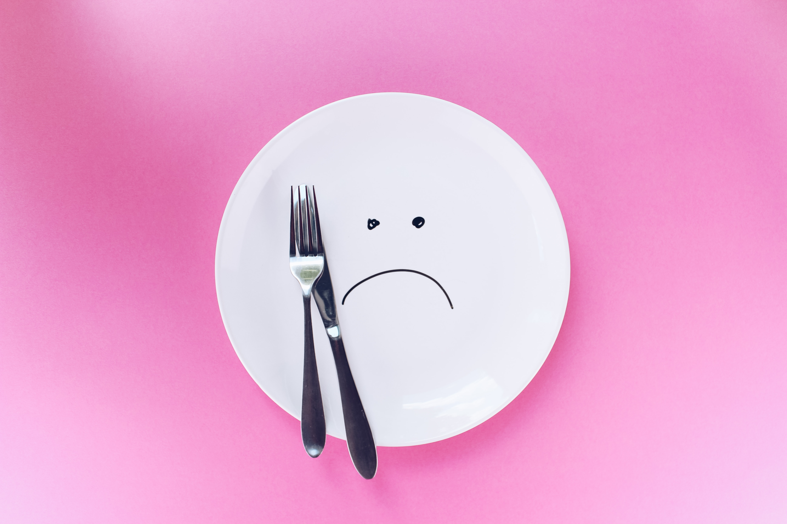

Hunger, poverty and food prices are inextricably linked. Not every person living in poverty is hungry, but almost all hungry people are living in poverty. Millions live with hunger and malnourishment because they simply cannot afford to buy enough food, cannot afford nutritious foods or cannot afford the farming supplies they need to grow enough good food of their own. Hunger can be viewed as a dimension of extreme poverty. It is often called the most severe and critical manifestation of poverty.There are people in the world so hungry, that God cannot appear to them except in the form of bread
as hunger is an ungrateful wretch
So now , we have to safe the food from those people who don't respect food and waste food so that in this world no one should have to go to bed hungry.Our focus Save the food from greedies and feed the needies